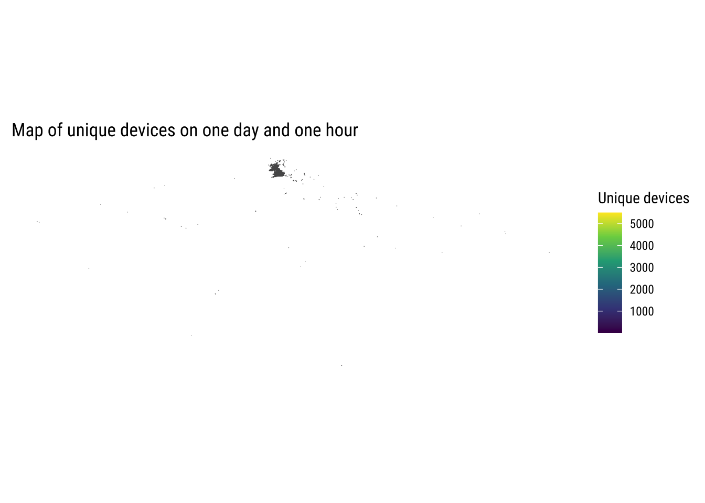
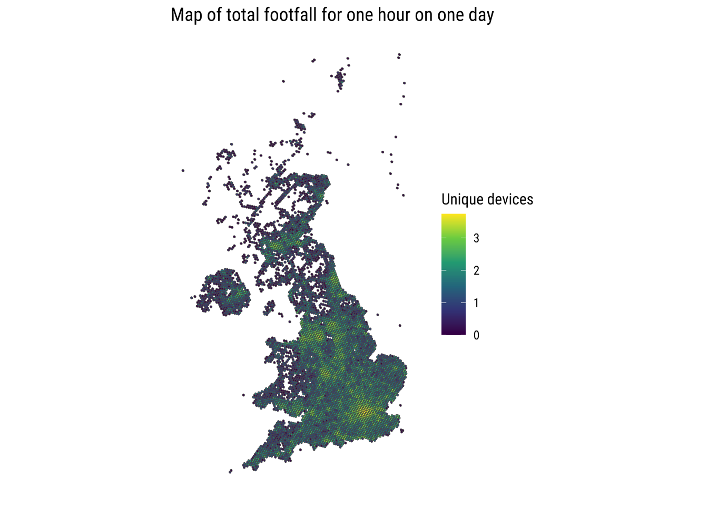
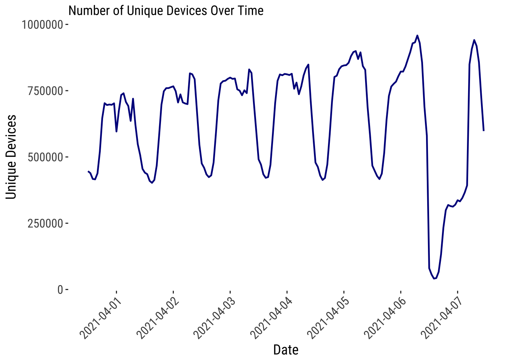

The following objects are masked from 'package:stats':
filter, lag
The following objects are masked from 'package:base':
intersect, setdiff, setequal, union
library(sf)
Linking to GEOS 3.11.0, GDAL 3.5.3, PROJ 9.1.0; sf_use_s2() is TRUE
library(ggplot2)library(tmap)
Breaking News: tmap 3.x is retiring. Please test v4, e.g. with
remotes::install_github('r-tmap/tmap')
library(viridis)
Loading required package: viridisLite
library(spdep)
Loading required package: spData
To access larger datasets in this package, install the spDataLarge
package with: `install.packages('spDataLarge',
repos='https://nowosad.github.io/drat/', type='source')`
Reading layer `uk-local-authority-districts-2021' from data source
`/Volumes/rdm04/DEBIAS/data/inputs/geographies/hexboundaries/uk-local-authority-districts-2021.geojson'
using driver `GeoJSON'
Simple feature collection with 382 features and 3 fields
Geometry type: GEOMETRY
Dimension: XY
Bounding box: xmin: -6e-04 ymin: -0.0673 xmax: 0.0537 ymax: 0.0013
Geodetic CRS: WGS 84
Digital trace data from Pickwell
pickwell
This first line defines the data source to be analysed. We have one option:
pickwell
dfd <-"pickwell"
if (dfd =="pickwell") { df_traces_dfd <-fread(paste0(wd, "/data/inputs/pickwell/uk/01042021/locations-09-part0000.csv.gz"))}
Below we see the dataframe of active decives
head(df_traces_dfd)
timestamp device_aid device_aid_type latitude
<int> <char> <char> <num>
1: 1617267600 daa23719-70b1-403f-8b56-ca51b4954e4b IDFA 54.76820
2: 1617267600 a8702d42-06c7-4720-9738-9630ed4710b0 IDFA 50.80262
3: 1617267600 3ada5260-0937-450e-a683-b990a2ba02af IDFA 51.60361
4: 1617267600 67068683-0daa-4cfa-9ae3-0eee16e37ff6 IDFA 52.15513
5: 1617267600 e32960d6-3957-4a7f-9934-cadf19818136 AAID 53.37204
6: 1617267600 c0e1f067-3784-4a55-9b94-52f911fa2e04 AAID 52.29445
longitude horizontal_accuracy altitude altitude_accuracy location_method
<num> <num> <num> <num> <char>
1: -6.0186000 29.6 0.0 0 gps
2: -0.0256060 20.0 26.7 0 gps
3: 0.0345350 9.1 0.0 0 gps
4: -1.2747480 65.0 0.0 0 gps
5: -2.8231634 15.3 0.0 0 gps
6: -0.6045144 7.8 129.3 0 fused
ip user_agent OS OS_version manufacturer model
<char> <lgcl> <char> <char> <char> <char>
1: 151.229.150.209 NA iOS 14 Apple iPhone
2: 213.205.198.60 NA iOS Other Apple iPhone
3: 78.86.35.179 NA iOS 12.5.2 Apple iPhone
4: NA iOS Apple iPhone
5: NA Android 9 SAMSUNG
6: 31.127.59.4 NA Android
carrier
<char>
1:
2:
3: 234-057;Sky UK Limited
4:
5:
6:
There are as many records as nrow()
nrow(df_traces_dfd)
[1] 5000001
and the number of unique devices is:
length(unique(df_traces_dfd$device_aid))
[1] 670967
coords <- df_traces_dfd[, c("latitude", "longitude")]h3_indexes <-geo_to_h3(coords, 6)df_traces_dfd$CODE <- h3_indexes# Grouping the rows of the "df_mov" data frame by the "date" columnsf_traces_h3 <- df_traces_dfd %>%group_by(CODE) %>%summarise(unique_devices =n_distinct(device_aid)) sf_traces_h3$geometry <-h3_to_geo_boundary_sf(sf_traces_h3$CODE)$geometrysf_traces_h3 <-st_as_sf(sf_traces_h3, sf_column_name ="geometry")
# Plot the mapggplot(data = sf_traces_h3) +# base_map(st_bbox(sf_traces_h3), basemap = 'google-terrain', increase_zoom = 2) +geom_sf(aes(fill = unique_devices), size =0.1) +scale_fill_viridis_c(option ="viridis") +# theme_map_tufte() + labs(fill ="Unique devices", title ="Map of unique devices on one day and one hour", ) +theme_map_tufte()

But some data is far from the UK territories. Some in the sea, Falkland islands, Antigua, etc.
# Filter geometries that intersect the bounding boxfiltered_sf <- sf_traces_h3[st_intersects(sf_traces_h3, bbox_sf, sparse =FALSE), ]
# Plot the mapggplot(data = filtered_sf) +# base_map(st_bbox(sf_traces_h3), basemap = 'google-terrain', increase_zoom = 2) +geom_sf(aes(fill =log10(unique_devices)), size =0.1) +scale_fill_viridis_c(option ="viridis") +theme_map_tufte() +labs(fill ="Unique devices", title ="Map of total footfall for one hour on one day", ) +theme_map_tufte()

# UNCOMMENT ONLY IF YOU WANT TO REREAD ALL THE DATA TO GENERATE TIME SERIES - TAKES LONG# # results <- list()# # base_folder <- paste0(wd, "/data/inputs/pickwell/uk") # day_folders <- list.dirs(base_folder, recursive = FALSE) # # # for (day_folder in c(day_folders)) {# # # Extract the day's date from the folder name ("DDMMYYYY" format)# day_timestamp <- basename(day_folder) # # day_formatted <- paste0(# substr(day_timestamp, 5, 8), "-",# substr(day_timestamp, 3, 4), "-",# substr(day_timestamp, 1, 2)# )# # # Get all files for the day that match the pattern for hourly files# hour_files <- list.files(day_folder,# full.names = TRUE,# pattern = "^locations-\\d{2}-part\\d{4}\\.csv\\.gz$")# # # Group files by hour (extract the hour part from the file name)# hour_groups <- split(hour_files, sub("^locations-(\\d{2})-.*$", "\\1", basename(hour_files)))# # for (hour_group in hour_groups) {# # combined_data <- NULL# # # Read each file in the current hour group and combine them# for (hour_file in hour_group) {# df_traces_dfd <- fread(hour_file)# combined_data <- bind_rows(combined_data, df_traces_dfd)# }# # # Convert combined data to sf object # sf_traces_dfd <- st_as_sf(combined_data, coords = c("longitude", "latitude"), crs = 4326)# # # Filter data within the UK bounding box# sf_filtered <- sf_traces_dfd[st_intersects(sf_traces_dfd, bbox_sf, sparse = FALSE), ]# # num_unique_devices <- n_distinct(sf_filtered$device_aid)# # num_records <- nrow(sf_filtered)# # hour <- sub("^locations-(\\d{2})-.*$", "\\1", basename(hour_group[[1]]))# # full_timestamp <- paste(day_formatted, hour, sep = " ")# # results <- append(results, list(data.frame(# timestamp = full_timestamp,# unique_devices = num_unique_devices,# records = num_records# )))# }# }# # time_series <- bind_rows(results)# # head(time_series)# # write.csv(time_series, # paste0(wd_local,# "/data-engineering/code/05_pw_exploring-data_files/time_series.csv"), # row.names = FALSE)
time_series <-read.csv(paste0(wd_local,"/data-engineering/code/05_pw_exploring-data_files/time_series.csv"))time_series$timestamp <-as.POSIXct(time_series$timestamp, format ="%Y-%m-%d %H")
ggplot(time_series, aes(x = timestamp, y = unique_devices, group =1)) +geom_line(linewidth =0.8, color ="darkblue") +scale_x_datetime(breaks =seq(from =as.POSIXct(format(min(time_series$timestamp), "%Y-%m-%d 12:00:00")),to =as.POSIXct(format(max(time_series$timestamp), "%Y-%m-%d 12:00:00")),by ="1 day" ),labels = scales::date_format("%Y-%m-%d") ) +labs(title ="Number of Unique Devices Over Time",x ="Date",y ="Unique Devices" ) +theme_plot_tufte() +theme(axis.text.x =element_text(angle =45, hjust =1) )

ggplot(time_series, aes(x = timestamp, y = records, group =1)) +geom_line(linewidth =0.8, color ="darkblue") +scale_x_datetime(breaks =seq(from =as.POSIXct(format(min(time_series$timestamp), "%Y-%m-%d 12:00:00")),to =as.POSIXct(format(max(time_series$timestamp), "%Y-%m-%d 12:00:00")),by ="1 day" ),labels = scales::date_format("%Y-%m-%d") ) +labs(title ="Number of Records Over Time",x ="Date",y ="Records" ) +theme_plot_tufte() +theme(axis.text.x =element_text(angle =45, hjust =1) )